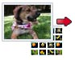

Beautiful web albums
Show your photos at their best. View full-screen slideshows, see your pictures arranged on a global map, enjoy video playback, and more. |
|
Focus on people
People matter in your photos. Our technology helps you automatically organize your photos based on the people in them, and works in Picasa and Picasa Web Albums.
See name tags in Picasa Web Albums » |
 |
Get organized
Picasa automatically finds all the photos on your PC, wherever they are, and will organize them in seconds. |
|
Be creative
Use Picasa to design and print beautiful photo collages, create fun video slideshows, add photo text or view your favorite photos on your desktop or screensaver. |
|
It's free to use
Picasa is free to download, and Picasa Web Albums provides 1 gigabyte of free storage -- that's enough space for 4,000 wallpaper-size photos.
Download Picasa 3.6 |
|
|
Sharing made simple
Publish your favorite photos online with one click. Create stunning online photo albums to share with friends and family, or public albums for the world to see. Get notified when your "Favorites" post new photos. |
 |
Edit to perfection
Improve almost any picture with Picasa's one-click fixes for common problems like red-eye, color, and lighting. Or, use tuning and effects to make your best photos look even better. |
|
Add places
Easily add geo-tags to your photos so that you can remember exactly where they're from using Google Maps.
|
 |
Order photos & gifts, or print at home
Picasa makes it easy for you to get the best out of your color printer. And Picasa Web Albums gives your friends the ability to download full-resolution pictures, so they can do the same. When ordering online, choose freely between major retail services. |
 |
|